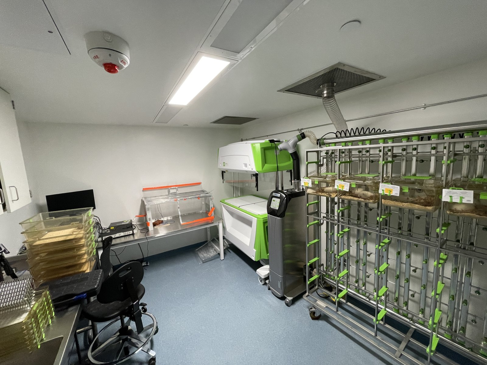

Biomarkers of epilepsy
We study pathological high-frequency oscillations and pHFO-derived network features as candidate biomarkers of epileptogenesis.
Read more →The Li Lab develops multimodal biomarkers and neuromodulation strategies for epilepsy and related neurological disorders, combining electrophysiology, neuroimaging, network science, and photobiomodulation.

Our core question is practical: can we identify high-risk epileptogenic networks early enough to intervene?
We study pathological high-frequency oscillations and pHFO-derived network features as candidate biomarkers of epileptogenesis.
Read more →We test photobiomodulation as a candidate antiepileptogenesis strategy using in vitro and in vivo preclinical models.
Read more →Our work integrates MEA, penetrating microelectrodes, LFPs, imaging, computational modeling, and graph-theoretical analysis.
Read more →Selected facility and equipment images from the current lab materials.